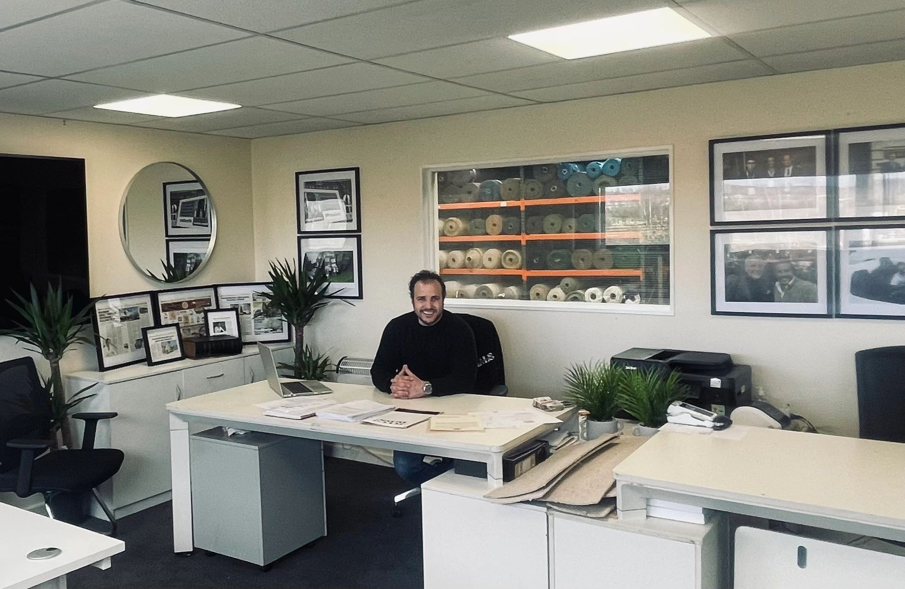
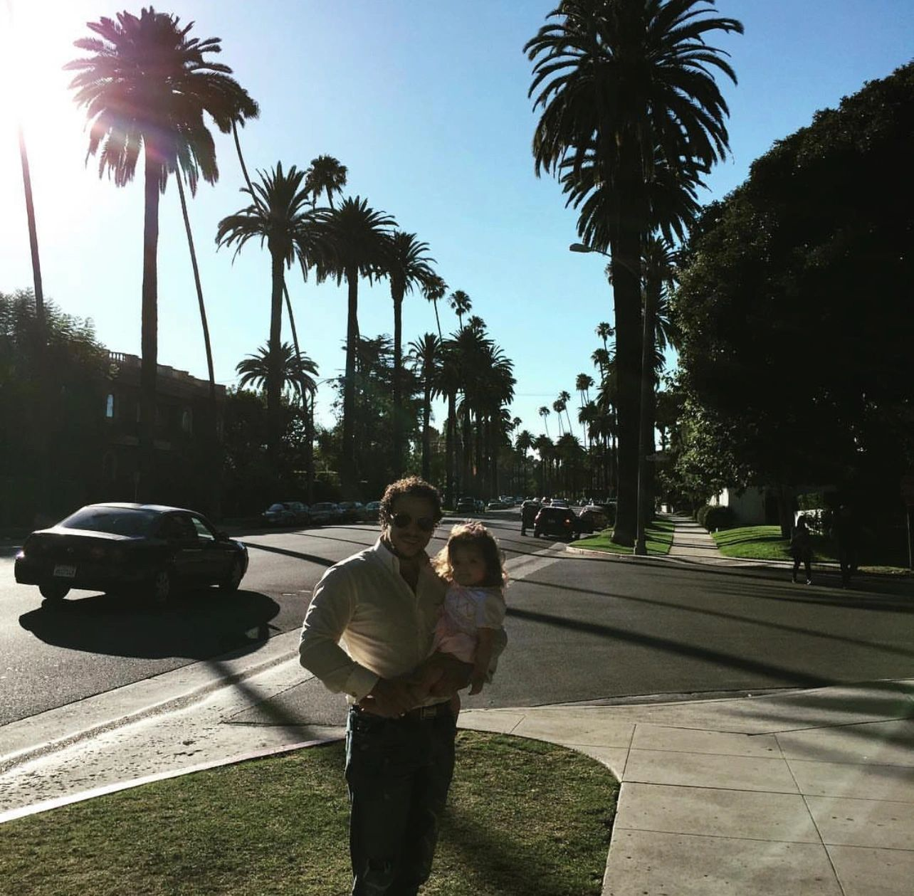

Understand before acting.
Interrogate the numbers, assess the risks and take time to understand the opportunity.
Entrepreneur · Investor · Mentor
Finding value.
Building opportunity.
A British entrepreneur with a practical approach to asset acquisition, international trade and business growth.
↓ A closer look
Experience is where
opportunity begins.
01 — The background

Wolfgang Douglas’s work brings together distressed asset acquisition, property, international distribution and entrepreneurship.
His business background spans the UK and international markets, with interests ranging from industrial inventory and materials to property and specialist trading. At the centre of his approach is a straightforward idea: understand an asset, recognise its potential, and connect it with the right opportunity.
His Romani heritage and experience building businesses inform his interest in mentoring entrepreneurs and supporting people from communities that are often underrepresented in business.
The supplied career profile traces Wolfgang’s business activity back to 2004, including bespoke design and build, global distribution, property investment and import/export.
His personal experience campaigning for his father, Albert Douglas, also shaped his public advocacy and his commentary on the risks of doing business internationally.
Today, the Wolf Mindset Business Academy brings his interest in practical business education, professional networks and mentorship together in one platform.
02 — Business interests
A connected set of interests, from recovering industrial assets to opening new routes for international trade.
Acquiring and realising value from surplus inventory, bankrupt stock and probate assets. The focus includes industrial equipment, materials and specialist goods, with an emphasis on practical recovery and resale.
Explore RomanichalProperty interests across residential and commercial markets, alongside an interest in modular accommodation, residential park homes and affordable housing solutions.
The supplied background describes transactions in the UK and international markets, including the UAE.
Discuss a property opportunityImport, export and distribution interests linking the UK with markets including the United States, China and the Middle East. The supplied profile describes Kyoto distribution and luxury furnishing interests, alongside specialist hardwood and architectural materials.
Make a trade enquiryIndustrial recycling, metals recovery and the movement of usable materials back into productive supply chains. This complements the wider asset recovery model by connecting recovered stock with relevant industry partners.
Visit Romanichal03 — The approach
The Wolf Mindset centres on preparation, discipline and the ability to recognise value where others see a setback.
Interrogate the numbers, assess the risks and take time to understand the opportunity.
Look beyond the obvious. Surplus stock, overlooked assets and changing markets can open new possibilities.
Bring together people, experience and market knowledge to turn a sound idea into practical action.
Wolf Mindset
Business Academy
04 — Sharing the experience
The Wolf Mindset Business Academy is a platform for practical business learning, mentorship and entrepreneurial connections. Explore its current programmes, membership and services directly with the academy.
Explore Wolf MBA Contact the academy05 — Media & commentary
Perspectives on asset liquidation, international trade and the economic environment for British businesses.
Asset acquisition
Wolfgang’s perspective on trading, acquisitions and finding value in distressed assets.
Watch on YouTubeInternational trade
Commentary on the relationship between the UK and US and the wider trading landscape.
Watch on YouTubeBusiness & the economy
A discussion about the economic conditions and policy decisions affecting British business.
Watch on YouTubeVideos load only when you choose to play them. You can also watch directly on YouTube.
06 — Explore further
Find business updates and further information at the original sources.
07 — Contact
For business opportunities, academy enquiries
or media requests, contact the relevant team.
Email links open your email app. No message is sent until you send it.